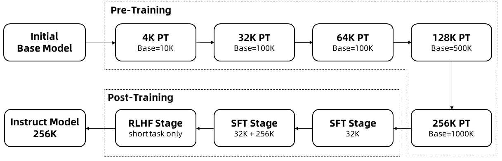
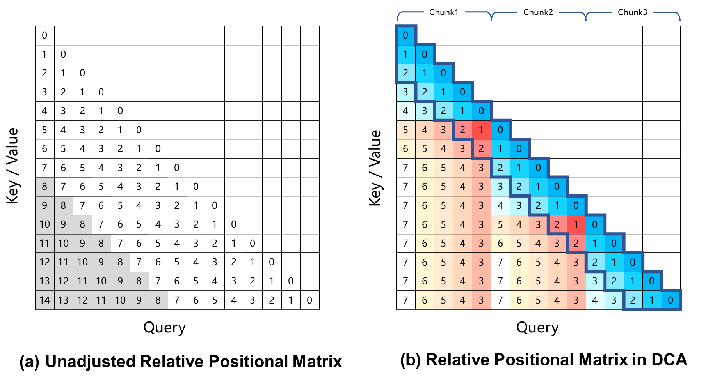

一句话读懂
Qwen2.5-1M 在不损伤短文本能力的前提下，把 Qwen2.5 的上下文从 128K 扩展到 100 万 token。它靠两条主线做到这一点：① 高效的长上下文训练（合成长依赖数据 + 渐进式扩长 + 多阶段微调），② 高效的推理与部署（免训练的长度外推 DCA + 稀疏注意力 MInference + 引擎级优化）。最终在 100 万 token 场景下把 prefill（首 token 前的预填充）提速 3.2–6.7 倍，并开源了模型与基于 vLLM 的推理框架。
关键直觉：训练只到 256K，剩下到 1M 的部分不再训练，而是在推理时用 DCA 把「没见过的超远相对位置」重新映射回训练见过的范围 —— 省钱、且对短文本零副作用。
问题定义
为什么需要 100 万 token 的上下文？
大模型最受限的资源之一，就是「一次能读多少字」。上下文太短，模型就只能处理简单的单点任务，做不了真正复杂的现实场景。
论文开篇给了两个最有代表性的痛点：要做仓库级别的代码生成与调试，模型得同时看到整个代码库的上下文；要基于海量文档做深度研究，模型得一次吞下大量资料。4K / 8K 甚至 128K 的窗口都不够用。于是把上下文窗口越做越大，成了整个领域的明确趋势。
但是「把窗口做大」远不止改个配置那么简单，论文点明了三道现实关卡：
- 训练成本：长序列训练对显存和时间是指数级的压力，直接在 1M 长度上训练几乎不可行。
- 长度外推：基于 RoPE 的模型一旦遇到训练时没见过的超远相对位置，注意力权重会崩，性能急剧下降。
- 推理开销：注意力计算量随序列长度平方级增长。当输入达到 1M token 时，注意力能占到整个前向计算时间的 90% 以上；同时激活值显存也会爆炸。
Qwen2.5-1M 的全部技术，本质上就是分别拆解这三道关卡。
已有方案速览
别人是怎么做 1M 上下文的？
把上下文推到 1M 并非首创。论文把下面几条路线作为对比基线 —— 它们要么闭源、要么在更长序列上掉点明显，这正是 Qwen2.5-1M 想要超越的地方。
Gemini 1.5 是把上下文推到百万级 token 的代表性闭源模型，主打跨百万 token 的多模态理解。它证明了「超长上下文」在工程上是可行且有价值的，但作为闭源 API，开发者无法自行部署、也看不到训练与推理的具体做法。Qwen2.5-1M 的差异在于：开源权重 + 开源推理框架，让长上下文能力可以被社区复现和私有化部署。
开源社区已有把上下文标到 1M 的尝试：GLM-9B-Chat-1M（Zeng et al., 2024）与 Llama-3-8B-Instruct-Gradient-1048k（Gradient AI）。论文在 RULER、LV-Eval 等基准上把它们作为基线对比，结果显示：随着序列变长（尤其超过 64K），这些模型的准确率下滑较快。例如在 LV-Eval 的 256K 档，Llama-3-Gradient 仅约 21.1，而 Qwen2.5-7B-Instruct-1M 达到 42.7。
换句话说，「在配置里标上 1M」和「在 1M 上真的好用」是两回事 —— 这正是本文反复强调的有效上下文长度问题。
GPT-4o-mini 与 GPT-4o 是论文用来衡量「质量天花板」的闭源对照。它们能力很强，但官方上下文长度为 128K。论文的核心卖点之一就是：Qwen2.5-14B-Instruct-1M 在多个长上下文数据集上稳定超过 GPT-4o-mini，同时支持的上下文长度是其 8 倍，并在短文本任务上保持相近水平 —— 给社区提供了一个开源的强力替代品。
方法总览
两根支柱：先把模型「教」到 256K，再把它「推」到 1M
理解全文最关键的一点是：训练和推理被刻意拆开。训练阶段只把模型扎实地做到 256K（再长就太贵）；最后从 256K 到 1M 这一段，完全交给推理时的免训练技术。这样既控制了成本，又保证了短文本能力不被破坏。
① 高效长上下文训练 → 256K
② 高效推理与部署 → 1M
Qwen2.5-1M 没有改动模型结构，完全沿用 Qwen2.5 的 Transformer 设计，因此推理路径与原模型兼容。核心组件包括：
- GQA（分组查询注意力）—— 共享 KV 头，压缩 KV cache，长上下文下尤为关键；
- SwiGLU 激活、RoPE 旋转位置编码、QKV bias、带 pre-norm 的 RMSNorm。
| 模型 | 层数 | Q / KV 头 | Tie Embedding | 上下文 / 生成 | License |
|---|---|---|---|---|---|
| Qwen2.5-7B-1M | 28 | 28 / 4 | No | 1M / 8K | Apache 2.0 |
| Qwen2.5-14B-1M | 48 | 40 / 8 | No | 1M / 8K | Apache 2.0 |
此外还有一个基于 MoE 的 API 模型 Qwen2.5-Turbo，性能对标 GPT-4o-mini，但上下文更长、价格更具竞争力。
支柱一 · 高效长上下文训练
怎样在不烧爆预算的前提下，把模型训到 256K
长上下文训练之所以贵，是因为显存和计算随长度暴涨。论文的策略是「用更聪明的数据 + 更省的训练节奏」来提高每一份算力的效用。
1 · 数据：天然长文本不够，要合成「长依赖」
预训练语料来自 Common Crawl、arXiv、书籍、代码仓库等多样领域。问题在于：天然文本通常只有局部连贯性，模型不依赖远距离信息也能预测下一个词 —— 也就学不到真正的长程依赖。为此，论文额外合成了三类强调长依赖的任务数据：
Fill in the Middle
在文本不同位置、不同长度处挖空，逼模型整合缺口前后的远距离上下文来补全。
关键词 / 位置检索
按关键词或「某位置前/后」检索相关段落，强化跨段定位与位置关系理解。
段落重排
打乱段落让模型还原原序，训练它把握全局逻辑流与结构连贯性。
这些合成任务不仅提升长程建模，还提高了数据效率、减少了达到目标性能所需的迭代量。
2 · 渐进式扩长：长度逐级翻倍，RoPE base 同步抬高
论文没有一步到位训 256K，而是分五个阶段逐步加长。每加长一档，就用 ABF（自适应基频）把 RoPE 的 base 频率调高一档，让位置编码适配更长的序列；同时数据按 75% 当前最长 + 25% 较短 的比例混合，避免模型「学了长、忘了短」。

- 上排虚线框 = 预训练（Pre-Training）：从 Initial Base Model 出发，依次经过 4K → 32K → 64K → 128K → 256K 五个长度阶段。每个方框标注了该阶段的训练长度与 RoPE base 频率（图中为博客简写）。
- RoPE base 随长度抬高：按论文正文，base 频率随阶段从 10,000（4K）经 ABF 提升到 1,000,000（32K/64K）、5,000,000（128K）、10,000,000（256K）—— 这是让位置编码「跟得上」更长序列的关键旋钮。
- 下排虚线框 = 后训练（Post-Training）：256K 预训练完成后进入 SFT Stage（32K）→ SFT Stage（32K+256K）→ RLHF Stage（只用短任务），最终得到 Instruct Model 256K。
- 箭头 = 模型权重的流转方向：每一步都在前一步的检查点上继续训练，前两个长度阶段直接复用了 Qwen2.5 Base 的中间版本，进一步省算力。
- 为什么这么设计：逐级扩长让显存压力可控；混入短数据防遗忘；而训练止步于 256K —— 再往上到 1M 留给推理阶段的免训练外推（见支柱二）。
注：论文 Table 2 显示，即使最后一阶段用 262,144 长度训练，也反过来提升了 128K 样本的表现（128K 档从 37.6 → 87.6）—— 在更长序列上训练，能帮模型更充分释放在较短任务上的潜力。
| 训练长度 | Avg. | 4K | 8K | 16K | 32K | 64K | 128K |
|---|---|---|---|---|---|---|---|
| 32,768 | 82.3 | 96.8 | 94.7 | 95.9 | 92.2 | 76.4 | 37.6 |
| 65,536 | 86.8 | 96.5 | 95.5 | 93.6 | 92.5 | 86.7 | 56.0 |
| 131,072 | 92.5 | 96.5 | 95.9 | 93.0 | 92.6 | 93.0 | 83.8 |
| 262,144 | 92.7 | 95.6 | 93.8 | 93.1 | 94.1 | 91.9 | 87.6 |
看 128K 这一列：随训练长度增加，从 37.6 一路涨到 87.6 —— 直观印证了「在更长序列上训练，能显著改善相对较短任务」的结论。
3 · 后训练：用「智能体」造长指令，用「短样本」做对齐
长上下文任务的人工标注既贵又不可靠。论文的解法是自动合成：从预训练语料里挑长文档，让 Qwen2.5 基于文档里随机抽取的片段生成问题（涵盖摘要、检索、多跳问答、推理、编码等），再用 Qwen-Agent 框架（检索增强 + 逐块阅读 + 逐步推理）基于完整文档生成高质量答案。三者拼起来就是合成训练数据。
- 两阶段 SFT：第一阶段只用 ≤32,768 的短指令（步数与 Qwen2.5 一致），守住短任务能力；第二阶段混入 32K–256K 的长序列，小心平衡长短比例防遗忘。最终指令模型可处理到 256K。
- 强化学习：采用类 DPO 的离线 RL，只用 ≤8,192 的短样本。论文发现这足以显著改善人类偏好对齐，并能泛化到长上下文。
| 模型 | RL 之前 | RL 之后 |
|---|---|---|
| Qwen2.5-7B-Instruct-1M | 7.32 | 8.08 (+0.75) |
| Qwen2.5-14B-Instruct-1M | 8.56 | 8.76 (+0.20) |
| Qwen2.5-Turbo | 7.60 | 8.34 (+0.74) |
Longbench-Chat 是评估长上下文人类偏好对齐的基准（最长 100K）。短样本 RL 在长基准上全面提分，说明对齐能力可从短迁移到长。
支柱二 · 高效推理与部署（重头戏）
训练止步 256K，那 256K → 1M 这一段靠什么？
这一节是全文最有信息量的部分。它要同时解决三件事：让模型扛得住超出训练长度的输入（外推）、让注意力别那么慢（稀疏化）、让显存别爆 + 引擎别空转（工程优化）。下面这条交互流水线把它们串起来 —— 点「下一步」跟着 1M token 走一遍推理：
① 1M token 涌入：朴素做法直接崩
全注意力的计算量随长度平方级增长。当输入到 1M token，注意力可占前向时间的 90%+；而且激活值显存暴涨 —— 仅 Qwen2.5-7B 单个 MLP 层的激活就高达 71GB，远超模型权重和 KV cache。
② 长度外推：DCA + YaRN（免训练）
模型只训练到 256K，输入却有 1M。DCA（双块注意力）把序列切块，将「没见过的超远相对位置」重新映射成训练见过的小数值；YaRN 注意力缩放再给注意力 logits 加一个温度项，避免超长序列下注意力被稀释。两者都不改变短序列行为，所以短任务零副作用。
③ 稀疏注意力：MInference 只算关键 token
长上下文的注意力天然稀疏 —— 真正重要的 key 集中在「竖线 + 斜线」（Vertical-Slash）模式上。MInference 先离线搜出每个注意力头该保留多少竖线/斜线，推理时据此只在这些关键 token 上算注意力，算力与访存约降 10×，精度几乎无损。
④ 分块预填充：把激活显存压下来
整段一次编码会让激活显存随长度线性爆炸。改成分块预填充：序列切成长度 32,768 的 chunk 顺序处理，激活显存直降 96.7%。为配合 MInference，每个 chunk 用最后 64 个 token 来挑选本块的关键 token，从而为每个 chunk 生成各自的竖线/斜线。
⑤ 引擎优化：BladeLLM 把硬件吃满
算法之外还要拼工程。稀疏注意力 kernel 深度优化后峰值 FLOPs 利用率达 90%（A100/1M 下相对 FlashAttention 提速 27.8×）；动态分块流水线并行（DCPP） 动态调 chunk 大小、抹平流水线气泡；全异步调度（TAG） 把 Scheduler / Model Runner / Decoder 拆成三个互不等待的进程。
⑥ 首 token 产出：整体提速 3.2–6.7×
四层优化叠加后，1M 上下文的 prefill 提速 3.2–6.7 倍。例如 H20 上 Qwen2.5-14B-Instruct-1M 的推理时间从 12.2 分钟 → 109 秒；Qwen2.5-Turbo 从 4.9 分钟 → 68 秒。等待时间被大幅压缩，1M 上下文才真正可用。
外推核心：Dual Chunk Attention（DCA）
RoPE 模型在超出训练长度时退化的根因，是 query 与 key 之间出现了训练时从未见过的超大相对位置。DCA 的做法很直接：把整段序列切成若干 chunk，把相对位置重映射成更小的数，确保任意两 token 的距离都不超过预训练长度。下图就是它的核心 —— 相对位置矩阵的「改造前 vs 改造后」。

矩阵的行是 Key/Value、列是 Query，格子里的数字是该 query–key 对的相对位置。注意力只发生在下三角（每个 query 只看自己及之前的 token）。
- (a) 未调整的相对位置矩阵：相对位置从 0 一直线性增长到 14。灰色区域就是数值过大、训练时从未出现过的相对距离 —— 正是它们让超长输入下的注意力崩坏。
- (b) DCA 重映射后：整段被切成 Chunk1 / Chunk2 / Chunk3。所有相对位置都被压回一个小范围（不超过预训练长度），因此再也不会触碰「灰区」。
- 蓝色块 = Intra-Chunk（块内注意力）：同一 chunk 内距离本就近，保留原始相对位置（沿对角线的 0,1,2,3…）。
- 黄/橙色块 = Inter-Chunk（跨块注意力）：不同 chunk 之间，用重复的相对位置序列把距离压住，确保最大距离不超训练长度。
- 红色块 = Successive-Chunk（相邻块注意力）：专门处理相邻两块的边界 —— 若 query 与 key 落在局部窗口内就保留原始位置，否则回退到跨块的处理方式，从而保持短程相对位置的连续性。
为什么有效：三种模式分工协作，既守住了近距离的精确位置感，又把远距离「折叠」进安全范围。DCA 还能与 FlashAttention 无缝结合，落地到生产环境。配合它一起用的 YaRN 注意力缩放 公式为 1/t = 0.1·ln(s) + 1（s = 推理长度 / 训练长度）。
稀疏核心：MInference 的「竖线 + 斜线」与分块整合
有了外推，注意力还是太慢。论文基于 MInference 做稀疏化：长上下文里注意力图呈现规律的 Vertical-Slash（竖线 + 斜线） 模式 —— 少数 key 列被几乎所有 query 关注（竖线），加上沿对角线的局部邻域（斜线）。只在这些关键 token 上算注意力，就能逼近全注意力的效果。下面用一张示意图对比「整段稀疏」与「分块后每块各自稀疏」：
围绕 MInference，论文还做了三处关键改进，逐一点开看：
原始 MInference 整段一次编码，激活显存随长度线性增长（1M 时 7B 单 MLP 层就要 71GB）。论文把它和分块预填充整合：序列切成长度 32,768 的 chunk 顺序处理，激活显存降低 96.7%。难点在于分块后「整段的最后 query」尚不可见，于是改用每个 chunk 的最后 64 个 token 来识别关键 token —— 这会为每个 chunk 引入各自独立的竖线与斜线，且试验证明精度损失很小。额外好处：多请求时还能防止解码被冗长的 prefill 阻塞。
MInference 可以无缝接入 DCA，但论文观察到某些外推场景会掉点。原因推测是：DCA 的相对位置不连续，破坏了用于挑选关键 token 的「斜线」模式，导致选错 token。修复办法是：在挑选关键 token 的阶段，对相邻块与跨块注意力恢复连续的相对位置，让对角线方向尽量一致；而最终计算注意力权重时，仍使用 DCA 原本的非连续位置编码。也就是说，连续位置只在「选 token」这一步临时引入，不影响最终输出。
MInference 部署前要离线搜每个头的稀疏配置，但全注意力矩阵随长度平方增长，受显存所限这步通常只能在 <32K 的短序列上做 —— 对 1M 这类超长序列并不最优。论文用 FlashAttention 高效得到 softmax lse（未归一化注意力权重之和），定义注意力召回率：
Attention Recall = exp(softmax_lse_sparse − softmax_lse_full) ∈ (0, 1]
它衡量稀疏注意力对关键 token 的「捕获程度」。论文据此在由 1M token 序列组成的校准集上重新精修稀疏配置（Algorithm 1），显著降低稀疏化在超长序列上的精度损失。最终在 7B 模型的 Needle-in-a-Haystack 测试上，恢复了大部分性能，同时在 prefill 阶段保持约 4× 加速。
引擎层：BladeLLM 的三板斧
Qwen2.5-1M 的 API 由阿里 PAI 团队的高性能推理引擎 BladeLLM 驱动，其中多项优化已开源并将并入 vLLM：
Kernel 优化
稀疏注意力 kernel 做多级流水线 + 指令级优化，峰值 FLOPs 利用率达 90%。A100·1M 下相对 FlashAttention：MInference 13.7×，BladeLLM 27.8×。MoE kernel 在 H20 上达 3.4 TB/s 访存（较 vLLM FusedMoE +55%）。
动态分块流水线 DCPP
分块流水线并行中，各 chunk 的历史 KV 长度不同，导致注意力耗时不均、产生大量流水线气泡。DCPP 按注意力计算复杂度动态调整 chunk 大小，让每块耗时尽量相等，抹平气泡。
全异步调度 TAG
传统引擎里 Scheduler / Model Runner / Decoder 串行执行，非 GPU 环节拖低利用率。TAG 把三者拆成互不等待的三个进程，再用共享内存降低通信开销，大幅提升解码效率。
几个反直觉的点
读到这里，最值得记住的三件事
训练止步，推理接力
最贵的 256K→1M 这一段完全免训练。DCA 把超远相对位置「折叠」回训练范围 —— 连只在 32K 上训练的模型，都能在 1M passkey 检索上做到 >80%。
短样本反哺长能力
RL 只用 ≤8K 的短样本，却能稳定泛化到长上下文对齐（Longbench-Chat 全面提分）。对齐能力的迁移，比想象中更「便宜」。
长训练反哺短任务
用 262K 长度训练，反而把 128K 档的 RULER 从 37.6 拉到 87.6 —— 在更长序列上训练，能帮模型更充分释放在较短任务上的潜力。
实验结论（轻量）
到底有多强、有多快？
论文做了大量评测，这里只拎最核心的三句话：长任务大幅领先、短任务不掉、推理大幅提速。
长上下文：显著超越 128K 版本与同级闭源模型
- RULER（最长 128K）：Qwen2.5-1M 系列在大多数长任务上明显超过各自的 128K 版本，尤其 64K 以上。14B-Instruct-1M 在 128K 上拿到 92.2，是 Qwen2.5 系列首次破 90 分；其平均分甚至超过 GPT-4。
- LV-Eval（最长 256K）/ Longbench-Chat：14B-Instruct-1M 在多个数据集稳定超过 GPT-4o-mini。值得一提的是，仅在 32K 上训练的 Qwen2.5-72B-Instruct，配上本文的 DCA+YaRN 外推，在 LV-Eval 上各长度档全面超过 14B-Instruct-1M —— 既说明外推技术价值大，也说明大模型在复杂长任务上仍有底子优势。
- Qwen2.5-Turbo：长任务介于 7B-1M 与 14B-1M 之间，但推理更快、成本更低，性价比突出。
短上下文：能力没有被「长」拖累
在 MMLU-Pro、GPQA、MATH、HumanEval、IFEval 等十余个常用学术基准上，7B/14B-Instruct-1M 与各自 128K 版本表现基本持平；14B-1M 与 Turbo 在短任务上与 GPT-4o-mini 相当，却支持 8 倍长的上下文。
展开看短任务对照表（Table 6 节选）— 1M 版本 vs 128K 版本 vs GPT-4o-mini
| 数据集 | GPT-4o-mini | 7B | 7B-1M | 14B | 14B-1M | Turbo |
|---|---|---|---|---|---|---|
| MMLU-Pro | 63.1 | 56.3 | 54.3 | 63.7 | 63.3 | 64.5 |
| MMLU-redux | 81.5 | 75.4 | 74.8 | 80.0 | 80.7 | 81.7 |
| GSM8K | 93.2 | 91.6 | 91.7 | 94.8 | 94.8 | 93.8 |
| MATH | 70.2 | 75.5 | 72.9 | 80.0 | 79.5 | 81.1 |
| HumanEval | 88.4 | 84.8 | 86.0 | 83.5 | 88.4 | 86.6 |
| IFEval | 80.4 | 71.2 | 73.0 | 81.0 | 84.3 | 76.3 |
同一行内，1M 版本与对应 128K 版本数值贴得很近 —— 说明加上长上下文能力后，基础能力几乎没有妥协。
速度：1M prefill 提速 3.2–6.7×
以 batch size = 1、测量首 token 时延（TTFT）为口径，在 H20 与 A100 上，叠加稀疏注意力与引擎优化后：
On the H20 GPUs, the Qwen2.5-14B-Instruct-1M model reduces inference time from 12.2 minutes (with full attention) to just 109 seconds. The Qwen2.5-Turbo model decreases its processing time from 4.9 minutes to only 68 seconds.
在 H20 上，14B-Instruct-1M 处理 1M 上下文的时间从全注意力的 12.2 分钟降到 109 秒；Qwen2.5-Turbo 从 4.9 分钟降到 68 秒。等待时间被大幅压缩，长序列任务才真正可用。
本地部署示例（vLLM 定制分支 + DCA）— 启动 OpenAI 兼容服务的命令
# 1. 安装带 Dual Chunk Attention 的定制 vLLM 分支 git clone -b dev/dual-chunk-attn git@github.com:QwenLM/vllm.git cd vllm && pip install -e . -v # 2. 启动服务（按硬件调整并行度与最大长度） vllm serve Qwen/Qwen2.5-7B-Instruct-1M \ --tensor-parallel-size 4 \ --max-model-len 1010000 \ --enable-chunked-prefill --max-num-batched-tokens 131072 \ --enforce-eager \ --max-num-seqs 1
--max-num-batched-tokens 即分块预填充的 chunk 大小，越小越省激活显存、但推理略慢，官方推荐 131072。完整说明见官方博客与仓库。
结语
它的意义
Qwen2.5-1M 不只是「把数字标到 1M」，而是把长上下文从理论可行推向了实际可部署：训练上用数据合成与渐进扩长压低成本，推理上用免训练外推 + 稀疏注意力 + 引擎优化让 1M 真的跑得动，并把模型与框架一并开源。论文也坦言长上下文模型仍有很大改进空间，未来会继续探索更高效的训练、架构与推理方法，让其在资源受限环境下也能表现出色。